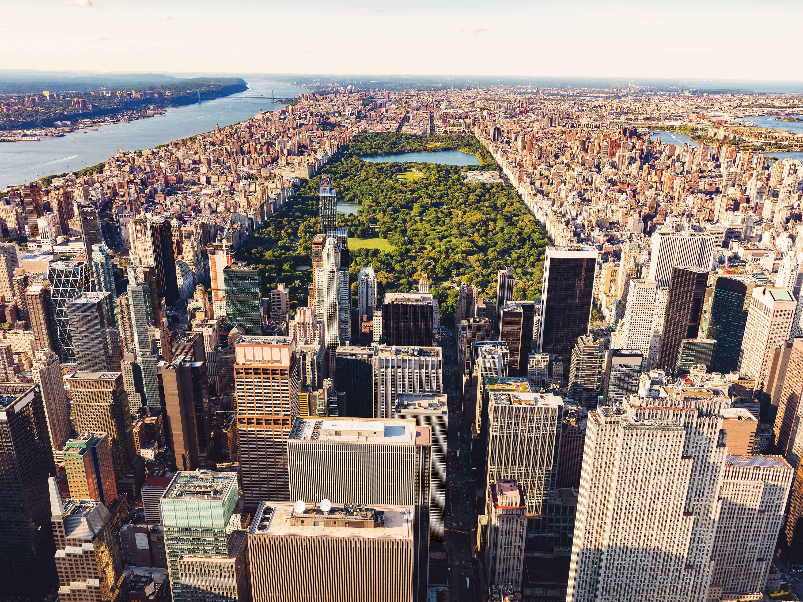
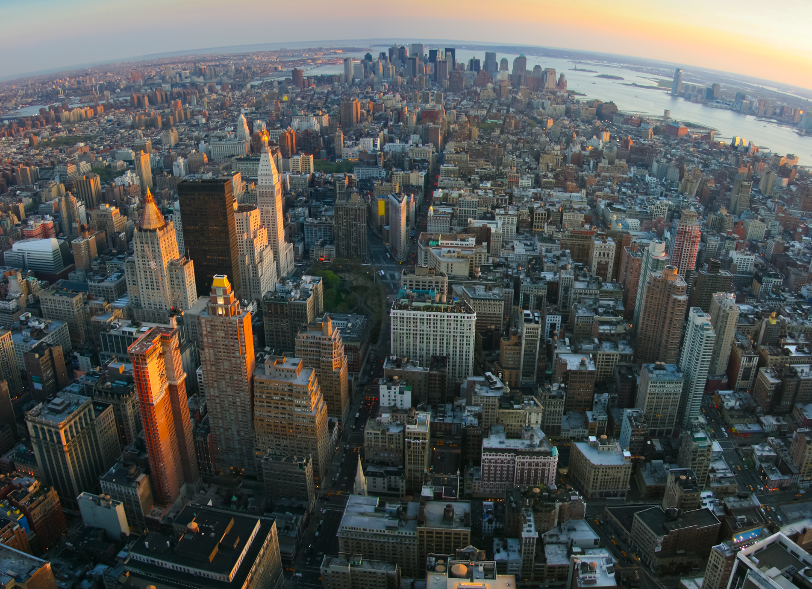
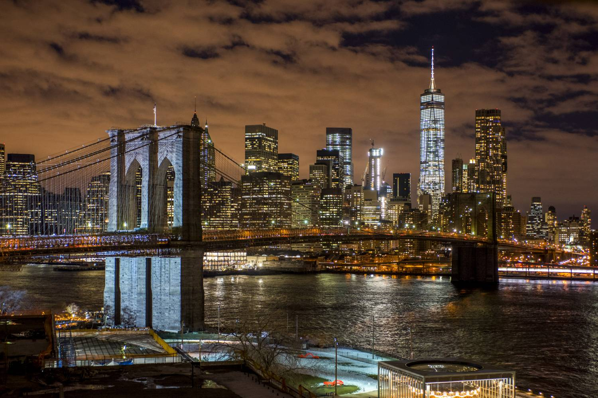

New York City. The city that *ACTUALLY* never sleeps. As they say, "If you make it here, you can make it anywhere." New York City is the dream city for many people, including me. Since I was a child, I wanted to move to USA, New York specifically. The architecture, the diversity, the no bullshit attitude needed to survive, all appealed to me and I haven't stopped dreaming since. I would love to move to New York after graduation and begin my professional career over there.
Often called The City, The Big Apple, or simply New York (NY), is the most populous city in the United States. With an estimated 2019 population of 8,336,817 distributed over about 302.6 square miles (784 km2), New York is also the most densely populated major city in the United States. Home to the headquarters of the United Nations, New York is an important center for international diplomacy.
Central Park (pictured above) is one of the most popular places in New York City. As you can see, it's basically a *BIG* chunk of green surrounded by some of the most epic architecture in the world.Central Park is New York's backyard, with a lush 843-acre patch of nature, including a lake, in the middle of Manhattan. Countless scenes from movies and TV shows have been filmed here over the years. The park is home to scenic hills, meadows, playgrounds, skating rinks, ball fields, and many well-known attractions, including Strawberry Fields, Belvedere Castle, and the Central Park Zoo.
New York has 3 of the 10 most visited tourist attractions in the world. Some of the most popular are visiting Times Square, Statue of Liberty, Empire State Building, Brooklyn Bridge(pictured below), Madison Square Garden, Grand Central, Vessel etc. The Broadway Theater District is a big attraction for not just tourists, but also locals and is a major center of the world's entertainment industry. New York is very diverse when it comes to cuisine as well. There are 76 restaurants in NYC that have been given at least one Michelin star. 5 of those restuarants have 3 Michelin stars, an honor held by only 120 restaurants across the globe.
New York City is the largest city in the United States and the second largest real estate market in the world. It is acknowledged as the capital of finance, fashion, business and advertising. It also has the most number of college students than any other city and the fastest growing tech ecosystem in the world, hence, it has been dubbed the "Financial Capital of the World." New York City has the two largest stock exchanges in the world, The New York Stock Exchange and NASDAQ. It is also home to the most billionaires than any other city in the world.
Several major corporations have their headquarters located in the state of New York, many of which are actually located in the city itself. Here are some of them:
| Rank | Company Name | City | Number of Employees |
|---|---|---|---|
| 1 | IBM | Armonk | 380,300 |
| 2 | Deloitte | New York | 286,200 |
| 3 | Pepsico | Harrison | 264,000 |
| 4 | JP Morgan Chase | New York | 256,105 |
| 5 | PricewaterhouseCoopers | New York | 250,930 |
| 6 | Citi | New York | 214,000 |
| 7 | Verizon | New York | 163,400 |
| 8 | ABM Industries | New York | 140,000 |
| 9 | Pfizer | New York | 92,400 |
| 10 | Standard Chartered USA | New York | 85,886 |
| 11 | Christian Dior | New York | 84,981 |
For more reading, check out:
The Largest Companies in New York Top 10 Fastest Growing Jobs in New York City